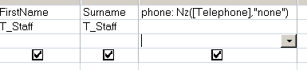

Detect a NULL value or a Zero Length string. Convert NULLs to a Zero-length string, or another value.
Syntax
Nz(expression, [ valueifnull ])
Key
valueifnull A value to return if expression is NULL.
If value_if_null is not specified and the
expression = NULL the default value
returned will be a zero-length string.
The Nz() function can be used in VBA or in an SQL query.
MS Access makes a distinction between an empty string "" and a NULL value. If you type something into a field and then delete it, you will be left with a zero length string, in contrast if nothing has ever been entered into a field it will be NULL.
Nz() will detect either of these.
The value_if_null can be set to return any string or number. If Nz() is returning #Error this is most often due to returning a Data Type thats incompatible with your variable's Data Type.
Nz() will not flag an Empty variable which has not yet been initialized.
If the value of the variant argument is NULL, the Nz function returns the number zero or a zero-length string (always a zero-length string when used in a query expression), depending on whether the context indicates the value should be a number or a string.
This is not always what you want, for example in a sales database, you may have some items that are free samples with a price of $0, so for a brand new item where the cost is not yet known you wouldn't want a default of $0 in such cases something like Nz(Me!item_price,"N/A") would be more sensible.
The Nz function is very useful for trapping errors caused by NULL/missing values, it is one of the most popula r/heavily used Access functions.
Nz() does not have to return a data type that matches the source data, so you can test an integer and return a string or vice versa.
Examples
In a query:

In VBA:
strDemo = Nz(Me!txtDescription)
strDemo = Nz(Me!txtName, "Error")
intProduct = Nz(Me!cmbProductID, 0)
If intProduct = 0 Then Msgbox "A required value is missing!"
“Is the glass half full, or half empty?
It depends on whether you're pouring, or drinking” ~ Bill Cosby
Related:
IIf - If-Then-Else function
If Then Else - If-Then-Else
IsNull - Test if an expression is NULL
IsEmpty - Test if a variable is empty (unassigned)
Error trapping - You tried to assign the null value to a variable